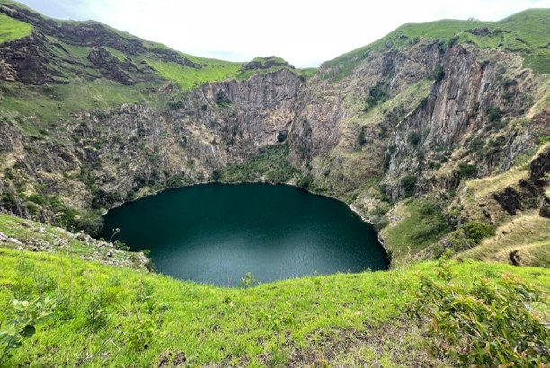
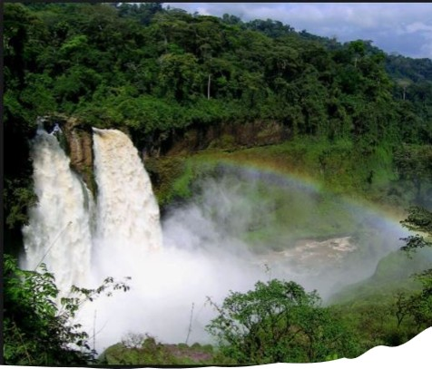

Official name: Republic of Cameroon
Motto:Peace-Work-Fatherland
Anthem: The
Rallying
Song
Political Capital: Yaounde
Economic Capital: Douala
Offical Languages: French & English
Local Languages: 250+
Independance from France:January 1st
1960
Independance from UK:October 1st 1961
Area: 183,569 sq mi
Population:Estimate at 30,966,105
Time Zone: UTC +1
Calling Code:+237



